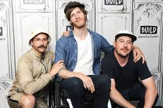

Background

Portugal. The Man is an American rock band from Wasilla, Alaska, currently residing in Portland, Oregon. The group consists of lead singer John Baldwin Gourley, Zach Carothers, Kyle O'Quin, Jason Sechrist, Eric Howk and Gourley's wife, background singer Zoe Manville. Gourley and Carothers met and began playing music together in 2001 at Wasilla High School in Wasilla. Their first two albums, from 2006 and 2007, were released on Fearless Records.
Official Portugal. The Man Website
Band Name

The band's name is based on the idea of David Bowie's "bigger than life" fame. They wanted the band to have a bigger-than-life feel but did not want to name it after one of their members. "A country is a group of people," guitar player and vocalist John Gourley explains. "With Portugal, it just ended up being the first country that came to mind. The band's name is 'Portugal'. The period is stating that, and 'The Man' states that it's just one person" (any one of the band members). The name has a more personal meaning as well: Portugal. The Man was going to be the name of a book that Gourley had planned to write about his father and his many adventures.